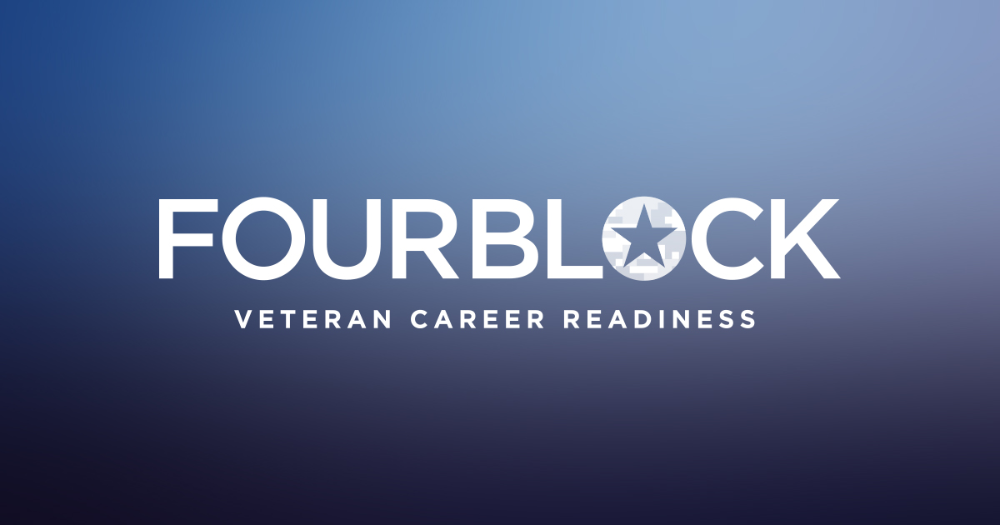

FourBlock is a nonprofit that helps transitioning service members move into civilian careers, running structured career-readiness programs across multiple cohorts and formats every year. The program had been collecting pre and post assessment data for years and had real impact stories to tell, but three problems were getting in the way of telling them clearly.
Post-program survey response rates were low, which meant the data the team was working with was thinner than it needed to be. Alumni progress became a black hole after graduation, so the program could measure short-term confidence shifts but not long-term career outcomes. And tracking and reporting across cohorts, formats, and years was difficult enough that the deeper questions, like whether the in-person format actually outperformed virtual, or how sentiment shifted across years, were not being answered systematically.
The team brought in a small group of Northeastern interns to dig in. My focus was the analytics layer: clean the data, surface what it was actually saying, redesign the instruments collecting it, and propose a framework for tracking alumni over time.
The work split into four threads, and they reinforced each other.
The first thread was the pre and post assessment analysis. The raw data lived in Salesforce, where the program tracked participants, cohort information, and survey responses across years. I used SQL to extract the relevant records, then cleaned and structured them in Python before building skill-by-skill comparisons across the full set of career readiness benchmarks the program tracked, from elevator pitch and salary negotiation to networking with civilians and understanding corporate culture. The output gave the team a clear, defensible view of which skills moved most after the program and which did not, broken down by year so trends were visible rather than buried in averages.
The second thread was sentiment analysis on 1,200+ open-ended survey responses. Rather than reading every comment by hand, which is what the team had been doing, I built a Python pipeline using both TextBlob and VADER to score sentiment across pre and post responses. Using two libraries was a deliberate choice. TextBlob handles formal language well, VADER picks up the nuance in informal and expressive text, and together they gave a more honest read of what participants were actually feeling than either would alone. The output showed clear sentiment shifts category by category and pointed to specific areas where the program could improve.
The third thread was a comparison between in-person and virtual program formats across multiple cohort years. The team had a long-running question about whether one format consistently outperformed the other, and the data had never been pushed hard enough to answer it. I built year-over-year comparisons across the shared skill measures, layered them into a heatmap so the differences were readable at a glance, and surfaced where the gap between formats actually mattered versus where it was statistical noise.
The fourth thread was redesigning the alumni survey itself. The existing instrument was long enough that response rates suffered, and the questions were not structured around the outcomes the program most needed to defend to funders and partner companies. I analyzed what was driving drop-off, restructured the survey into four focused sections covering outcomes, program effectiveness, demographics and follow-up, and career readiness, and proved through the analysis that a shorter format could maintain outcome quality while increasing participation. Alongside the redesign, I proposed a longitudinal framework for tracking alumni progression over time and a five-part strategy for sustained engagement covering message framing, channels, personalization, value exchange, and timing.
The deliverables for the program included multiple written reports, a final presentation to the FourBlock and Northeastern teams, and the restructured survey ready for the next cohort.